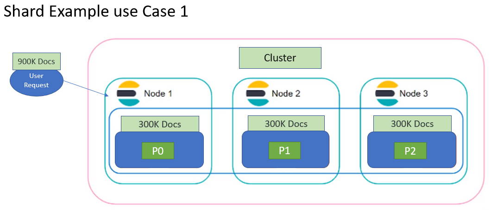
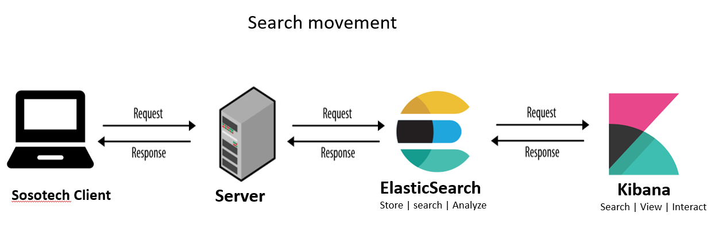
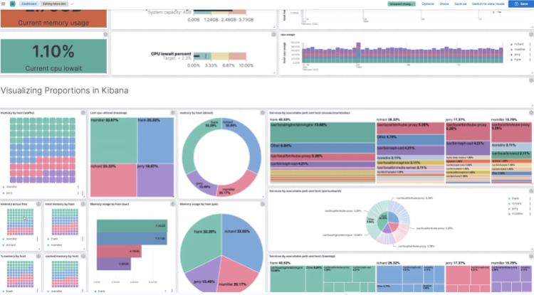

ELK - Elastic Stack
ELK Stack is the world’s most popular log management platform. The ELK stack is an acronym used to describe a stack that comprises of three popular projects: Elasticsearch, Logstash, and Kibana.
-
Elasticsearch is a distributed search and analytics engine built on Apache Lucene
-
Logstash is used for both shipping as well as processing and storing logs
-
Kibana is a visualization tool which is hosted through Nginx or Apache
Some popular Use Cases for ELK are:
Logging, Matrics, Security Analysis, Business Analysis - Logging - logging and analysing Data, like gaming data - Matrics - like NASA Rover can sent telematrics, sensor data - Security Analysis - Helps with securing comunication in Apps like Slack - Business Analysis - Helps with matching people
ElasticSearch
With ElasticSearch, User can sends search quary to your website and your server send those requests to ElasticSearch, Elasticsearch then processes this request and Responds back to the user, through the Server.
Elasticsearch Architecture: Key Components
Elasticsearch Cluster is composed of a group of nodes that store data.
Elasticsearch Node is an instance that runs in a cluster. Multiple nodes can be run on a single machine. When Elastic is running, you will have an instance of elastic known as Node. Each Node Has a unique ID and a node. Each Node belongs to a single cluster. Data is stored as documents in Elasticsearch. Indices are used to group documents that are related to each other. When an Index is created, it comes with a Shard, by default. There are the three main options to configure an Elasticsearch node:
- Elasticsearch master node
- Elasticsearch data node
- Elasticsearch client node
Search movement - client --> servers --> ElasticSearch

Shards is where data is stored. What you create an Index, you can create multiple shards that are distributed across nodes. Each shard has its replica to recover data in case of node failure. The primary shard and replica shard is always placed on different nodes. Horizontal scaling or scale-out is the main reason to shard a database. The number of shards depends heavily on the amount of data we have.
Shard Example use Case 1 
-
A BCBSNC Elastic engineer has 900k documents that they want to store.
-
Each Shard can only Hold a maximum of 300k Documents
-
Two more shards of 300GB each will be added bringing the total storage capacity to 900K Documents
Shard Example use Case 2

Scenario 1:
- An Elastic engineer searches 500k documents that is stored in a single Shard
- The response time for searching 500k Documents in a single shard is 10 seconds.
Scenario 2:
-
An Elastic engineer runs a parallel searches of 500k documents that are distributed in 5 Shard.
-
The response time for searching 100k Documents/Shard will be 2 seconds.
-
So, the response time for searching all 500k Documents that are distributed amongst the 5 shard will still be 2 seconds.
Kibana
Kibana is a data visualization and exploration tool used for log and time-series analytics, application monitoring, and operational intelligence use cases. It offers powerful and easy-to-use features such as histograms, line graphs, pie charts, heat maps, and built-in geospatial support.

Kibana Aggregations
There are two main types of aggregations
-
Metric aggregations
are used to calculate a value for each bucket based on the documents inside the bucket. -
Bucket aggregations are used groups documents together in one bucket according to your logic and requirements, while the Metric aggregations

For More information on Kibana,: Click link
Shell Scripting
A shell in a Linux operating system takes input from you in the form of commands, processes it, and then gives an output.
## Types of Shell There are four types, but two main shells in Linux:
-
The Bourne Shell: The prompt for this shell is $ and its derivatives are listed below:
-
POSIX shell also is known as sh
- Korn Shell also knew as sh
-
Bourne Again SHell also knew as bash (most popular)
-
The C shell: The prompt for this shell is %, and its subcategories are:
-
C shell also is known as csh
- Tops C shell also is known as tcsh
### Hands-On
Create script called: sososcript.sh
$ nano sososcript.sh
$ chmod +x sososcript.sh
In the script, add the following content:
#!/bin/bash
echo “Welcome to soso Devops master course sosoengineers”
sleep 2
echo “you’re all welcome sosoengineers”
sleep 2
echo “happy learning sosoengineers”
run the script: $ sh sososcript.sh
EX 2:
#!/bin/bash
name="sosoengineers" #this name is a variable
echo “Welcome to soso Devops master course $name”
sleep 2
echo “you’re all welcome to $name”
sleep 2
echo “happy learning at $name”
run the script: $ sh sososcript.sh
### VARIABLES
A variable is a temporary store for a piece of information. There are two actions for variables:
- Setting a value for a variable.
- Reading the value for a variable.
Variables are defined as follows − [variable_name=variable_value]
EX: NAME="soso technologies"
Variable Types: When a shell is running, three main types of variables are present
-
Local Variables are present within the current instance of the shell. They are set at the command prompt.
-
Environment Variables are available to any child process of the shell.
-
Shell Variables is a special variable that is set by the shell and is required by the shell to function correctly.
EX 1: set the name soso engineers as a variable[read] ``` #!/bin/bash echo "what is the schools name" read name echo “Welcome to soso Devops master course $name” sleep 2 echo “you’re all welcome to $name” sleep 2 echo “happy learning at $name”
***EX 2:*** set the name soso engineers as a variable[read]
#!/bin/sh echo "what is your study program?" read name echo "How is $name going so far?" read remark echo "It’s also going $remark with me too!"
***EX 3:*** set the name soso engineers as a variable[positional parameter-argument]
#!/bin/bash name=$1
echo “Welcome to soso Devops master course $name” sleep 2 echo “you’re all welcome to sosotech $name” sleep 2 echo “happy learning $name”
***EX 4:*** set the name soso engineers multi variables
#!/bin/bash sosouser=$(whoami) sosodate=$(date) serverconfig=$(ifconfig) sosodir=$(pwd) echo "$sosouser $sosodate $serverconfig $sosodir" ```